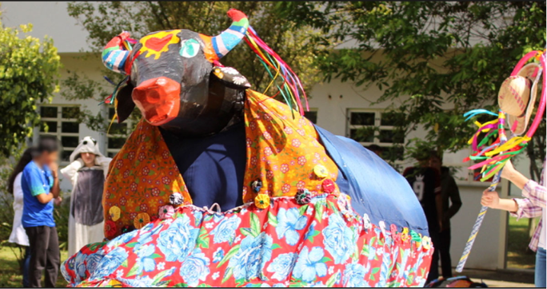

Fonte: Morada do Guaruca
O folclore se conceitua como um conjunto de manifestações culturais tradicionais de um determinado local. Ele abrange tudo o que é transmitido de geração em geração de forma espontânea, desde festas populares, danças, culinária e artesanato até provérbios, religiosidade e sotaques. No Brasil, o folclore é fruto do encontro de indígenas, africanos e europeus. Entre os personagens do folclore brasileiro, destacam-se Saci-Pererê, a Iara, o Curupira e o Lobisomem.
Tivemos uma aula expositiva sobre o folclore brasileiro e, principalmente, regional de Santa Catarina. Dentre eles, destaca-se: Bruxas de Florianópolis, Lagoa da Conceição, Boi de Mamão. Entendemos a importância e a influência que o folclore promove para a cultura de diferentes regiões, especialmente na nossa cidade.